Trilinear Interpolation With DynamicMesh
Most of the functionality for deforming DynamicMeshes is contained within the UTrilerpMeshComponent.
Details:
However, it's not strictly necessary to use this component, you can implement your own components or logic using trilinear interpolation:
Details:
Basic Usage
The easiest way to get up and running is to use the TrilerpMeshComponent. In the plugin's Examples directory, you will find a blueprint
called BP_NBDynamicTrilerpMesh, just set the Source Mesh property to the mesh you want to deform.
You can then either manipulate the lattice points directly:
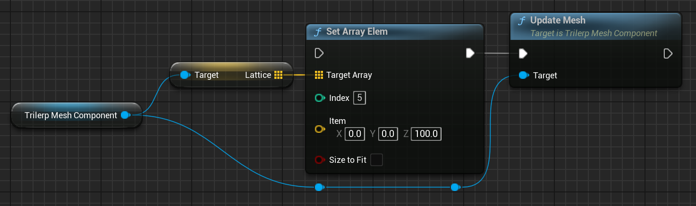
or use one of the provided functions for manipulating sets of lattice points:
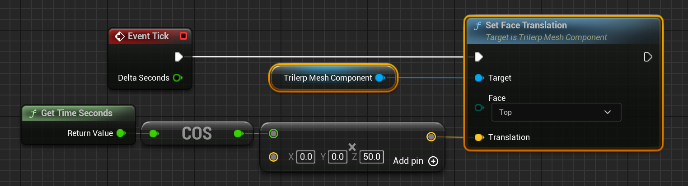
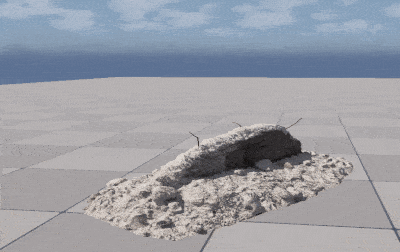
TranslateFace,RotateFace, andScaleFacewill all callUpdateMeshautomatically. If you are manually updating individual lattice points, you should callUpdateMeshyourself when you are finished to re-transform the mesh according to the new lattice points.
Lattice Indices
The deformation lattice is stored as an array of 8 vectors, one for each corner of the lattice. You can manipulate individual corners independently from the others to achieve a wide variety of effects.
The first four entries of the lattice array correspond to the bottom four corners of the lattice, while the last four correspond to the top four corners of the lattice.
The Lattice array indices correspond to the following corners (i.e. Lattice[0] matches the corner marked 0):
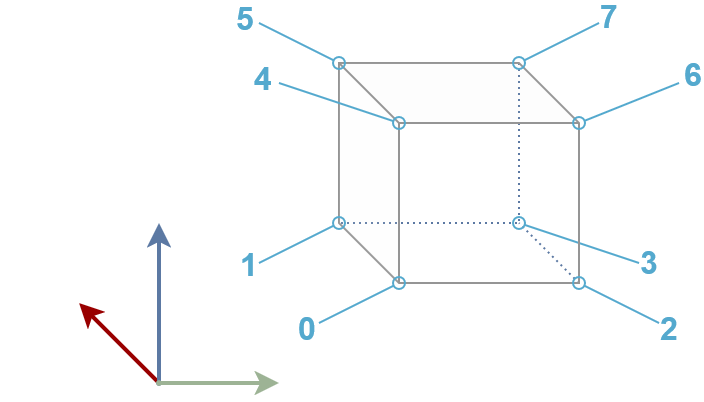
NOTE: While you are free to set and assign theLatticearray any way you see fit, you should never change its length! It should always have exactly8entries.
TrilerpMeshComponent Editor Tooling
If you select a TrilerpMeshCompnent in the editor, you will see a visualization of the current lattice state.
The green points represent the lattice points themselves, while the blue lines are just visual guides to help you see the shape of the lattice.
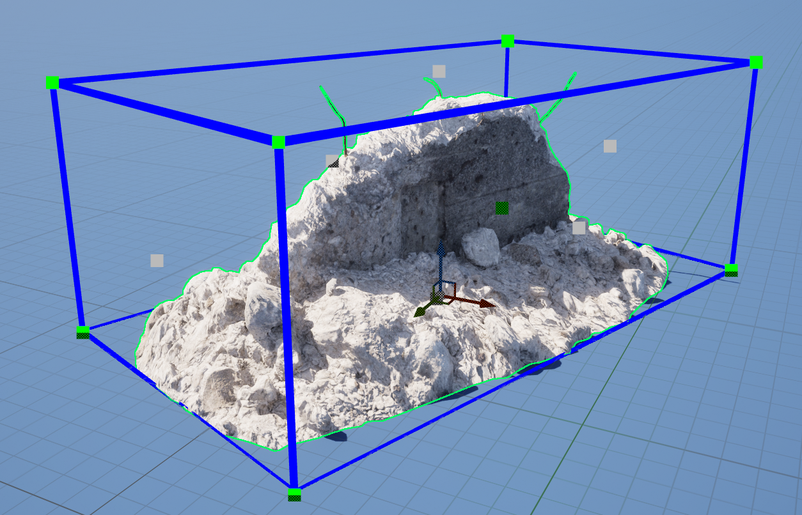
Selecting one of the green points allows you to drag it around and directly modify the lattice:
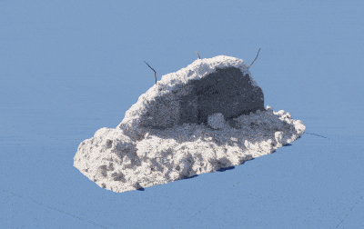
If you select one of the grey points, this will select all of the points which make up one side of the lattice. This allows you not only to drag those points together, but also allows you to use rotation and scaling tools on them:
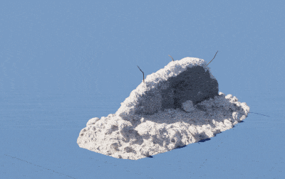
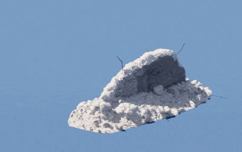
Handling Collision Data
When initializing the TrilerpMeshComponent from a static mesh you have the option to copy both the visual mesh data as well as the collision data.
This allows us to automatically keep the collision data up-to-date with the mesh deformation.
Simple Collision
If you enable Simple collision, then any time the mesh is updated we will automatically generate a new convex hull around the result.
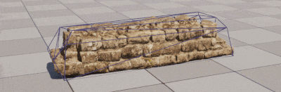
If you find that this automatic convex hull doesn't fit your object well and do not wish to enable complex collision, then you can generate your own custom
collision shapes using the Set Dynamic Mesh Collision from Mesh node in
a blueprint, or UGeometryScriptLibrary_CollisionFunctions::SetDynamicMeshCollisionFromMesh (defined in GeometryScript/CollisionFunctions.h) in C++.
In this case, when initializing the TrilerpMeshComponent you should set Include Collision to NONE, otherwise every time you call UpdateMesh we will waste some CPU time processing unused collision geometry.
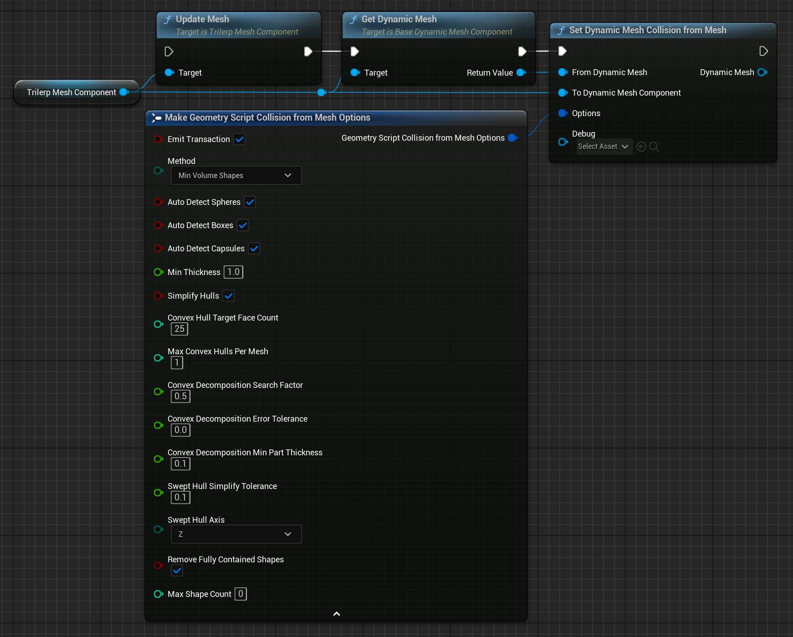
Complex Collision
If you enable Complex collision, then the collision mesh, itself, will be deformed in the same way as the visual mesh. This means that any changes you make to the mesh will be exactly reflected in the collision, although of course at added cost.

If this proves too expensive by default, an alternative approach would be to apply trilinear interpolation separately to two meshes, one detailed
mesh for visuals with no collision enabled, and one simple mesh with complex collision enabled that is not set to render. This can even be done without using multiple
TrilerpMeshComponents by transforming the extra mesh manually:
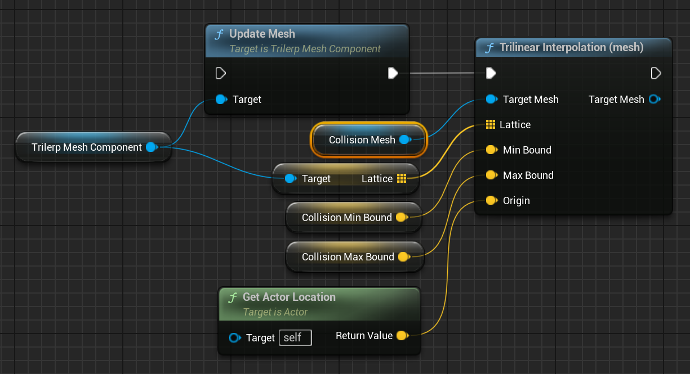
NOTE
In order for complex collision to work correctly, make sure that it is enabled on the component:
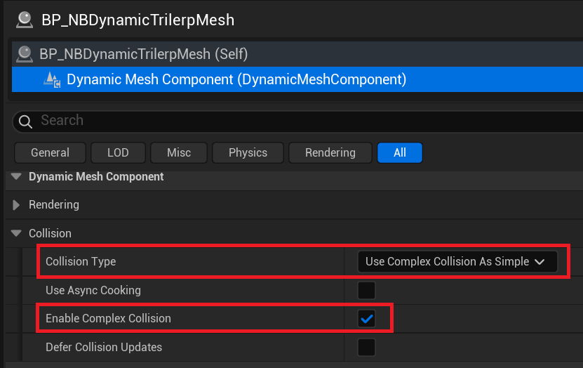
A Note on DynamicMeshActor
The DynamicMeshActor provides
a lot of additional functionality which is useful for working with DynamicMeshes. This functionality isn't required to use
the TrilerpMeshComponent, but if you are doing some of your own mesh modification/generation you may want to
use them together.
Fortunately, it is possible to replace the DynamicMeshComponent on a DynamicMeshActor with a TrilerpMeshComponent.
You can find the Component Class dropdown in the DynamicMeshActor details panel:
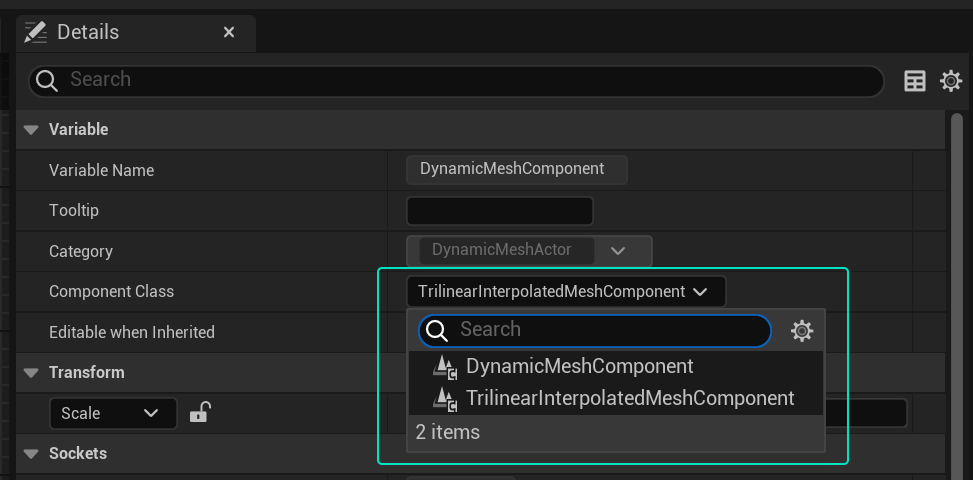
You then just need to cast to TrilerpMeshComponent in your actor blueprint:
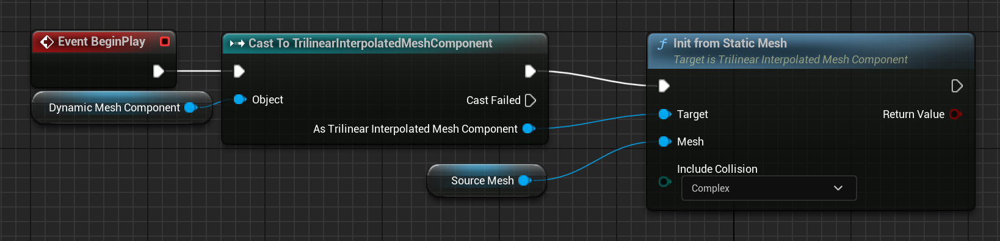
The example blueprints are all configured this way.
For any questions, help, suggestions or feature requests, please feel free to contact me at nbpsup@gmail.com